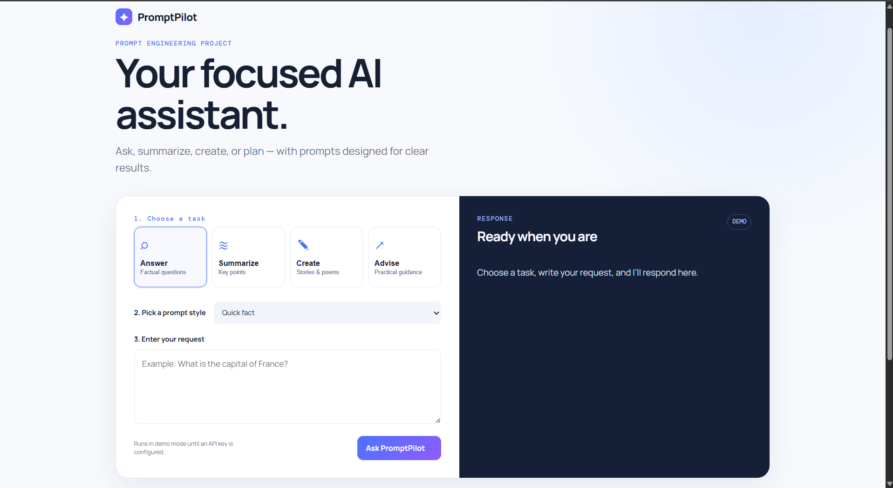
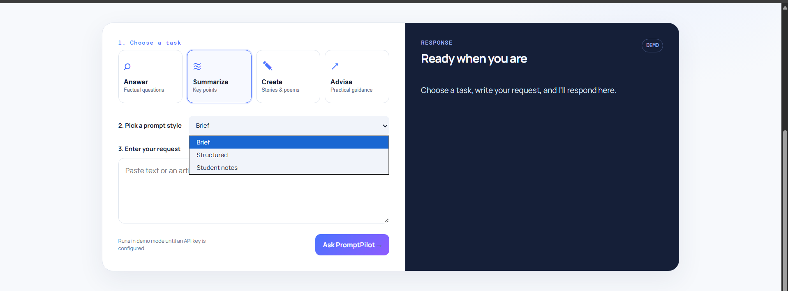
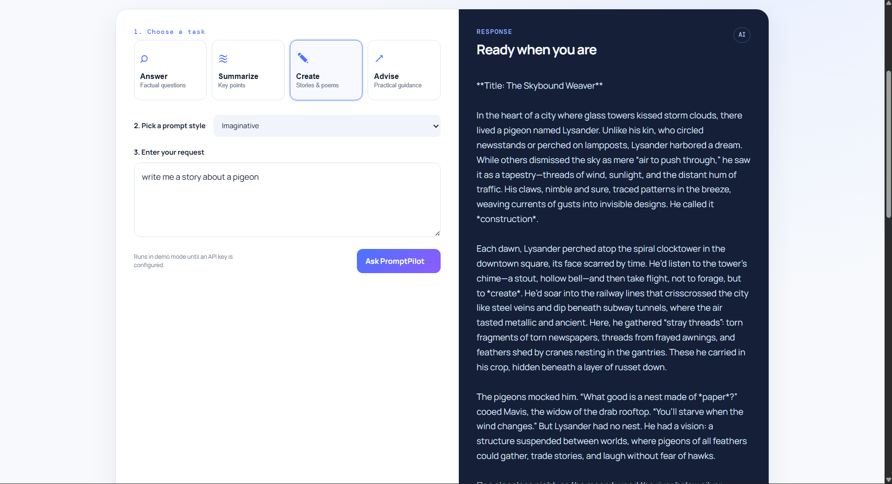
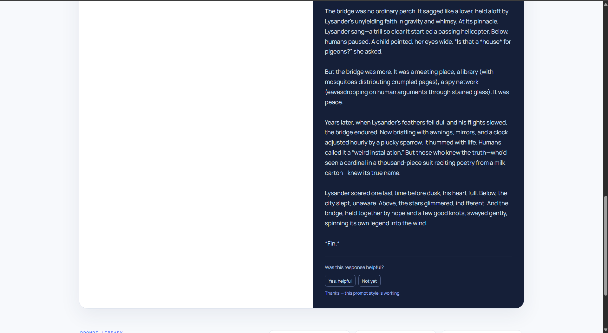

PromptPilot is a responsive, web-based artificial intelligence assistant designed to streamline user interactions with large language models through structured prompt engineering. By abstracting the complexity of prompt creation into intuitive task categories and prompt styles, the application ensures high-quality, consistent outputs. The system features four primary assistant modes, customizable output styles, and a local feedback collection loop to continuously refine prompt effectiveness. PromptPilot is deployed live on Vercel utilizing a serverless Node.js backend.
Project Overview
What is PromptPilot?
PromptPilot is a specialized web interface that acts as an intermediary between users and AI models. It provides pre-engineered prompt templates for common tasks to guarantee optimal AI responses.
Why it was developed & Problem it solves:
Users frequently struggle to extract accurate, well-formatted, or correctly toned responses from AI due to a lack of prompt engineering experience (often referred to as the "blank canvas problem"). PromptPilot solves this by constraining the inputs and dynamically injecting system instructions that guide the AI to produce specific, reliable results without requiring the user to master prompt design.
Target Users:
Students: For studying, summarizing notes, and generating revision material.
Professionals & Writers: For brainstorming, drafting creative content, and synthesizing information.
General Users: Seeking actionable advice and quick factual answers.
Objectives
Simplify AI Interaction: Lower the barrier to entry for effective AI utilization through an intuitive graphical interface.
Implement Structured Prompting: Utilize system-level prompt engineering to maintain consistent tone, length, and format across responses.
Establish a Feedback Loop: Collect user feedback to evaluate and iteratively improve the underlying prompt logic.
Deploy a Scalable Architecture: Create a lightweight, serverless application capable of secure API communication.
Features
Four Assistant Modes: Categorized task selections to fit user needs (Answer, Summarize, Create, Advise).
Three Prompt Styles per Mode: Each mode includes three unique sub-styles that adjust the AI's persona, output length, and formatting constraint (e.g., "Quick fact" vs "Study answer").
Local Feedback Collection: A built-in rating system ("Yes, helpful" / "Not yet") that records user satisfaction data asynchronously to evaluate prompt effectiveness.
Responsive Web Interface: A modern, accessible frontend design that adapts to desktop and mobile environments.
Live Deployment: Hosted reliably on Vercel using serverless functions.
Version Control: Fully tracked and maintained via a GitHub repository.
System Workflow
The user journey follows a strict, sequential pipeline ensuring the generated prompt is highly contextualized before it reaches the AI provider.
graph TD
A([User Accesses App]) --> B[Select Task Category]
B --> C[Select Prompt Style]
C --> D[Enter User Request / Context]
D --> E{Submit Request}
E --> F[Backend Constructs System Prompt]
F --> G[API Call to LLM Provider]
G --> H[Render Response in UI]
H --> I{User Evaluates Response}
I -->|Helpful| J[Log Positive Feedback]
I -->|Not Yet| K[Log Constructive Feedback]
J --> L([End Workflow])
K --> L
Prompt Engineering Methodology
Prompt engineering is the core driver of PromptPilot's accuracy and utility. Instead of passing raw user input directly to the model, the backend wraps the input in rigorously tested system instructions.
Prompt Categories: Tasks are divided by fundamental cognitive intent (Factual Recall, Synthesis, Generation, and Coaching).
Prompt Variations: Within each category, variables like Role, Audience, and Format are adjusted. For example, a "Student notes" summary prompt explicitly instructs the AI to use bullet points and highlight key terminology.
Response Consistency: By anchoring the AI with a strong system persona, the application drastically reduces hallucinations and off-topic dialogue.
User-Controlled Selection: Users remain in control of the output format without needing to know the technical verbiage required to achieve it.
Why it improves results: LLMs operate on probability. Narrowing the context window through highly specific instructions limits the probability of the model generating irrelevant data.
Technologies Used
Technology
Purpose
Node.js
Backend runtime environment handling API requests and file system operations.
Vanilla JavaScript (ES6)
Frontend DOM manipulation and asynchronous fetching without heavy frameworks.
HTML5 & CSS3
Semantic structure and responsive styling of the user interface.
OpenRouter / OpenAI APIs
Large Language Model providers utilized for natural language processing and generation.
Vercel / @vercel/node
Cloud platform for continuous deployment and serverless backend execution.
Git & GitHub
Source code version control and remote repository hosting.
Project Architecture
PromptPilot employs a lightweight client-server architecture. The frontend communicates with a serverless Node.js backend to prevent exposing secure API keys to the client. The backend routes the request to the designated AI provider, retrieves the response, and serves it back to the client.
graph LR
subgraph Client Side
UI[Web Browser UI]
end
subgraph Serverless Backend - Vercel
API[Node.js API Route]
Storage[Feedback JSON]
end
subgraph External Services
LLM[OpenRouter / OpenAI]
end
UI -->|HTTP POST| API
API -->|Fetch API| LLM
LLM -->|Response| API
API -->|Render| UI
API -.->|Write| Storage
Choose a Task: On the left panel, select your overarching goal.
Choose a Prompt Style: Select the specific format you require.
Enter Request: Type or paste your context into the text area.
Generate: Click Ask PromptPilot to initiate the AI request.
3. Prompt Styles Overview
Answer:Quick fact, Explain simply, Study answer.
Summarize:Brief, Structured, Student notes.
Create:Imaginative, Constrained, Polished.
Advise:Action plan, Supportive, Compare options.
4. Providing Feedback & Troubleshooting
Beneath the AI's response, evaluate the output. Clicking Yes, helpful or Not yet helps refine prompt structures.
Website does not load: Verify your internet connection.
App displays "DEMO" mode: This indicates the live environment lacks active API keys, falling back to offline responses.
Testing
The application was validated through manual functional testing to ensure the prompt routing, API integration, and UI state management operate as intended.
Test Case
Input
Expected Result
Actual Result
Status
UI Rendering
Navigate to URL
Page loads with all 4 task buttons visible
As expected
Pass
Prompt Selection
Click "Summarize" -> "Brief"
UI updates to highlight selection
As expected
Pass
Empty Submission
Click "Ask" with empty input
Warning/Error shown preventing API call
Error caught
Pass
API Request (Demo)
"capital of france" (Answer)
Server returns fallback demo string "Paris"
Demo string returned
Pass
Feedback Logging
Click "Yes, helpful"
Success message displayed; JSON payload sent
Status 200 OK
Pass
Screenshots

Home Page showcasing the clean UI

Task and Prompt Style Selection

Generated Response Output

Helpful / Not Helpful Feedback LoopPrompt Library Overview
Note on Demo Mode: To protect billing quotas, the live deployment environment variables for the LLM provider are intentionally omitted. The application gracefully degrades into a "Demo Mode" utilizing hardcoded fallback responses.
Future Improvements
Conversation History: Implementing local storage to retain previous prompts across sessions.
Export Functionality: Allowing users to download responses as .txt or .pdf.
Analytics Dashboard: Visualizing the data collected in the feedback system.
Authentication: Adding user accounts to personalize prompt preferences.
Limitations
Stateless Architecture: The application does not retain context or memory of previous turns in the conversation.
Feedback Storage: The current JSON approach is not persistent across serverless function restarts in production.
API Dependency: Relies entirely on the uptime of third-party LLM providers.
Conclusion
PromptPilot successfully demonstrates the practical application of prompt engineering within a user-friendly software environment. By removing the friction of manual prompt construction, the project achieves its goal of making AI interactions more predictable, structured, and useful. The serverless backend deployed on Vercel proves the viability of lightweight architectures for AI wrappers.